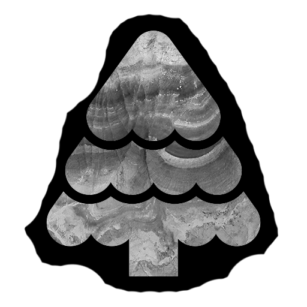
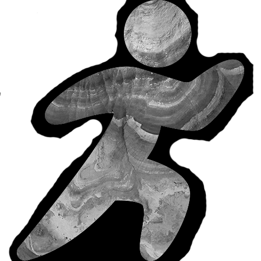
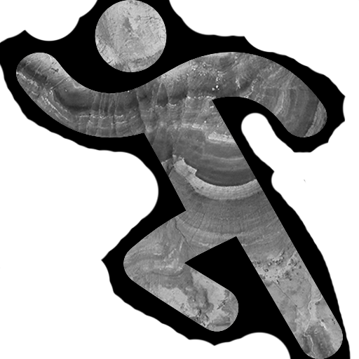
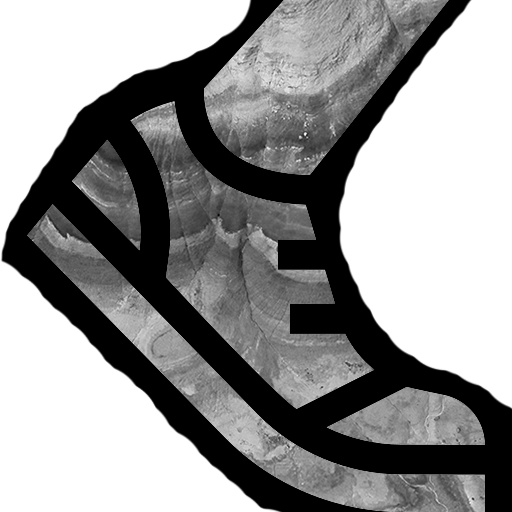
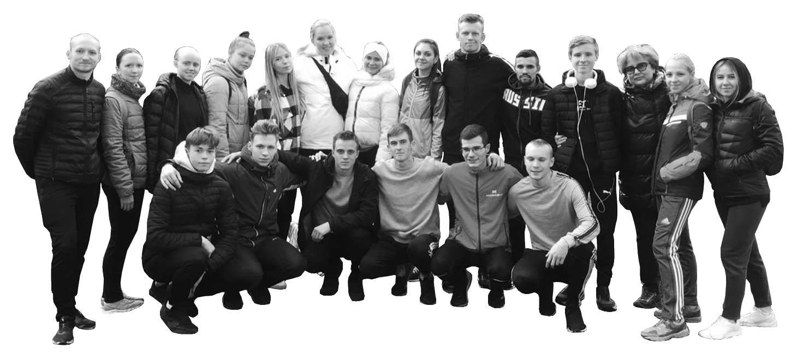
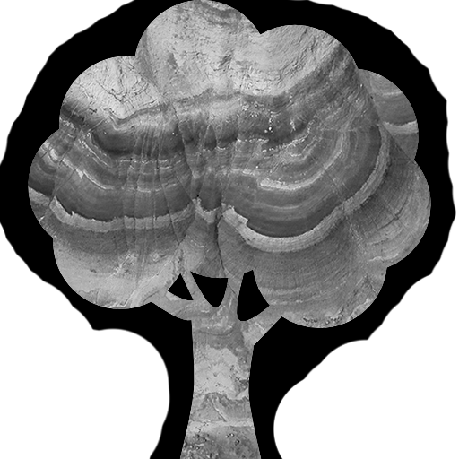

ИВАНОВСКИЙ
ГОСУДАРСТВЕННЫЙ
УНИВЕРСИТЕТ
2021 STUDENЬ
     ВСТАНЕШЬ
#
ПОДАЛЬШЕ
–
КРИСТИНА БАКУРСКАЯ / 08.10.2021
РАНЬШЕ
8 ОКТЯБРЯ 2021 ГОДА
На территории парка культуры и отдыха «Харинка» прошёл
легкоатлетический кросс в рамках Спартакиады Ивановской
области среди вузов на 2021-2022 учебный год.
Согласно регламенту соревнований, каждый
вуз представлял команду из десяти девушек и
десяти парней. Первые бежали один круг по
пересечённый местности, равный одному
километру, вторые – втрое больше.
РЕЗУЛЬТАТЫ
Девушки
Юноши
По итогам первого вида
межвузовской спартакиады
ИвГУ попал в тройку
лучших. В командном
первенстве женская
сборная заняла второе
место, мужская – третье.
Поздравляем ребят, их наставников с отличным началом
нового тренировочно-соревновательного года и желаем не
терять хватку на пути к новым достижениям
Однако же при подсчёте баллов зачёт осуществлялся
по шести лучшим личным результатам участников
12 место – Леднева Анна
14 место – Курзанова Полина
16 место – Винокурова Анастасия
17 место – Зверева Марина
19 место – Бакурская Кристина
21 место – Шерихова Ксения
22 место – Цыплова Виктория
23 место – Шаногина Анастасия
24 место – Смирнова Арина
27 место – Удалова Мария
14 место – Алексеев Дмитрий
16 место – Поленов Дмитрий
20 место – Тимофеев Данила
21 место – Волков Сергей
28 место – Пухов Данила
31 место – Вершинин Сергей
45 место – Макаренко Николай
54 место – Кочнев Дмитрий
57 место – Аранов Иван
Ивановский государственный университет
представляла легкоатлетическая сборная в составе
двадцати человек, включая спортсменов Шуйского
филиала. Каждый из них, вне зависимости от своего
легкоатлетического профиля, достойно преодолел
пускай и живописную, но местами трудную дистанцию.
ИВАНОВСКИЙ
ГОСУДАРСТВЕННЫЙ
УНИВЕРСИТЕТ

2021 STUDENЬ
КРИСТИНА БАКУРСКАЯ
/ 08.10.2021
ИСТОЧНИК ИКОНОК: